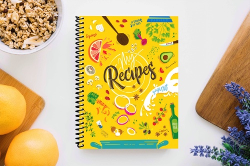

Overview | Ingredients | Preparation | About Ted Lasso
|
These chewy bar cookies combine two all-time favorites: crumbly, buttery shortbread and bittersweet brownies. Nut lovers can mix almonds, pecans or walnuts into the brownie batter, which gives the bars a delightful crunch. But those who prefer savoring the smooth, gooey centers of their brownies can easily leave them out. In any case, be sure not to overbake the brownies. As soon as the top sets, they're done! |
